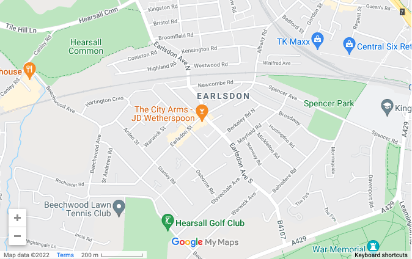

HOME
|
NEWS
|
LOCAL INFO
|
HISTORY
Local Information & Services

View a
Google map of Earlsdon
.
Click the links below for the following community information:
Neighbourhood and representative community groups
Voluntary groups
Clubs and societies
Places of worship
Health and wellbeing services
Local schools
Community Services
Earlsdon Ward councillors
Member of Parliament
Online Business Directory
Food and drink
©
EOL 2021
| In association with
Fireside Media
visitors